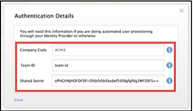

This setup might fail without parameter values that are customized for your organization. Please use the Okta Administrator Dashboard to add an application and view the values that are specific for your organization.
Send an email to Norton Zone support and ask them to enable SAML 2.0. Provide the following three items in the message.
- Copy the following IDP Metadata into the message.
Sign in to the Okta Admin app to generate this variable.
- Request Norton Zone to whitelist your company’s Okta instance in the Norton Zone’s Single Sign-On (SSO) system using the attached IDP Metadata.
- Request a company code of your choice. Your end users will enter this company code when they sign into Norton Zone. Norton Zone uses this code to identify your company’s Okta instance and to redirect your users to your company’s Okta website.
After After Norton Zone Enterprise Support creates a company code and whitelists your company’s Okta instance, you get a confirmation email. This usually takes a few days. After you receive the confirmation email, activate your Norton Zone for Business Pro (Enterprise) license. There are three steps to this procedure.
Norton Zone for Business Pro lets you automate user provisioning and deprovisioning. This way, your company’s Norton Zone administrator does not have to add users manually through the Norton Zone Admin console. You must configure your company’s Okta instance to leverage the Norton Zone provisioning APIs to automate user provisioning and deprovisioning.
After you enable automatic user provisioning and deprovisioning for Norton Zone in your company’s Okta instance, there are two features.
- When new users are added to your corporate directory, Okta automatically adds those users to Norton Zone and Norton Zone sends the users an email invitation to join your business zone. The Norton Zone administrator can view the new users in the Manage Users page in the Norton Zone Admin console.
- When users are removed from your corporate directory, Okta automatically removes those users from Norton Zone. The Norton Zone administrator can no longer view the users in the Manage Users page in the Norton Zone Admin console. The users are signed out of Norton Zone and can no longer sign in to Norton Zone.
Before you enable automated user provisioning and de provisioning for Norton Zone in Okta, you need the IdP Provider ID, which is your company code, the Team ID, and the Shared Secret. You can acquire the Team ID and the Shared Secret for your Norton Zone account from the Norton Zone website.
To acquire Team ID and Shared Secret from Norton Zone, complete the following four steps:
- Sign in to your company’s Okta website using your administrator account.
- From the Administrator Dashboard, select My Applications and click Norton Zone. You are redirected to the Norton Zone Admin console in the Norton Zone website.
- On the Admin page, select <strong">Keystore, and select <strong">Get IdP Configuration. Norton Zone displays your Team ID and Shared Secret, as shown below.

- Copy and save the Team ID and Shared Secret to a file.
- Sign in to your company’s Okta website using your administrator account.
- From the Administrator Dashboard, select the Applications tab, and then select Norton Zone.
- Select User Management and then click Edit from the User Management Settings pane.
- Check Enable user management for Norton Zone.
- Under API Credentials, in the IdP Provider ID field, type your company code and copy and paste the Team ID and Shared Secret that you acquired from the Norton Zone website.
- Under User Management Features, check each of the following items:
- Provision new Norton Zone accounts from Okta
- Push Okta user profile updates to Norton Zone
- Deprovision unassigned Norton Zone accounts
- Select Save.
Verifying the Norton Zone and Okta Integration
To verify that Norton Zone and Okta are correctly integrated, you can add sample users to your company’s Okta instance and assign the Norton Zone application to those users. If you have users already added to your Okta instance before you enable automated provisioning, you can assign the Norton Zone application to those users. The following four steps describe the process.
- Sign in to your company’s Okta website using your administrator account.
- From the Administrator Dashboard, select Applications, and then select Norton Zone.
- Select the People tab and enter the name of the user to whom you want to assign the application, and select it.
- Select Next, and then select Done.
To verify the integration, sign in to the Norton Zone website as an administrator after you have assigned Norton Zone to a user in Okta. The integration is successful if the user is automatically added to your business zone and listed under the Manage Users page in the Norton Zone Admin console.